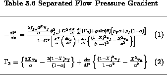

As noted in the previous section, when the two phases are considered to have different velocities (e.g., liquid and gas), the relation between void fraction and quality is not analytically calculable, but requires some empirical data which links void and quality. A large number of empirical and semi-empirical methods have been suggested over the last fifty years. The semi-empirical model which seems to have the most physical basis is the drift flux model. It relates the gas-liquid velocity difference to the drift flux (or 'drift velocity') of the vapor relative to the liquid; e.g., due to buoyancy effects. This model has been principally developed by Zuber and Findlay (1965), Wallis (1969) and Ishii (1977), and has been refined since that time by themselves and coworkers. The model is fully developed in Wallis' book and only the essential relationships are presented here.
In all two-phase flows, the local velocity and local void fraction vary across the channel dimension, perpendicular to the direction of flow. To help us consider the case of a velocity and void fraction distribution (possibly different) it is convenient to define an average and void fraction weighted mean value of local velocity, v. Let F be parameters, such as any one of these local parameters, and an area average value of F across a channel cross-section would be given as
A void fraction weighted mean value of F may be defined as follows:
Now consider the gas velocity,  , that can vary across the channel. An expression for the weighted mean gas velocity may be expressed as
, that can vary across the channel. An expression for the weighted mean gas velocity may be expressed as
Taking now a reference frame moving with the velocity of the center of the volume of the fluid one can define the gas or vapor phase drift velocity by
where j is the volumetric flux of the two-phase flow. This is the velocity of the center of volume of the mixture, and is given by
where and are the volumetric flux of the liquid and gas phases, respectively, given by
Using Eqs. 3.10 and 3.13 in Eq. 3.9, the weighted mean velocity of the gas or vapor phase can be expressed as:
where is the weighted mean drift velocity of the gas phase, and Co is the distribution parameter defined by
Therefore, Co depends on the form of the velocity and concentration (flow-pattern) profiles. For a given flow pattern, the extensive study of Zuber and Wallis suggest that Co depends on pressure, channel geometry and perhaps the flow rate.
The form of Eq. 3.15 suggests a plot of the data in plane. There are two important characteristics of this plane representation. First, when Co and are constant Eq. 3.15 shows that a linear relation exists between and ;SPMlt;j;SPMgt;. The slope of such a line gives the value of distribution parameter, Co, whereas the intercept with the axis gives the drift velocity, . Thus, these two parameters can be easily determined from experiments even when the measured profiles required for the direct calculation of Co are not available. The second important characteristic of the plane pertains to any abrupt measured changes in the value of Co and ; these indicate a change of flow-pattern in the conduct of the experiment.
The average void fraction at a given location in the flow channel can now be obtained by rearranging Eq. 3.15 giving:
This equation shows that can be determined if Co, and the average gas or vapor volumetric flux are known for a given flow regime; i.e., bubbly slug churn-turbulent. Noting that and Co are flow-pattern dependent quantities then any void fraction predictions based on Eq. 3.17 would reflect the flow-pattern effects on the void fraction.
Suggested expressions for Co and and other flow-pattern dependent void fraction correlations are presented in Table 3.7 based on the work of these investigators.


<>P



REFERENCES